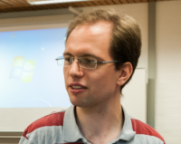
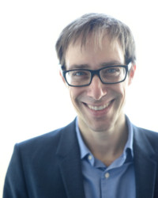
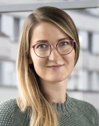
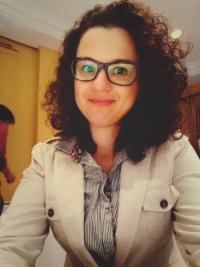
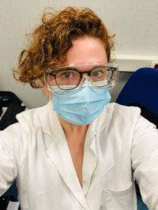
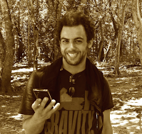
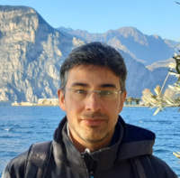
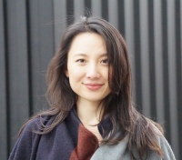
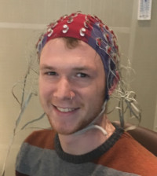

News
- Jun 2022 The data submission phase is now finished. We thank all participants for their great efforts! More information will follow in the upcoming newsletters.
- May 2022 We have published a pre-registration report on OSF, which outlines the conceptual aims of our upcoming analysis!
- May 2022 The frequently asked questions page has been updated.
- Apr 2022 The data submission portal will open on May 2nd! Please contact us if you have not received an individual URL to the system by May 3rd.
- Nov 2021 We have now completed screening the registrations. We are excited to announce that more than 300 teams consisting of more than 600 researchers decided to participate to this project! During the next 1–2 days, you will receive from us either the instructions for downloading and analyzing the data, or a request to provide more information that allows us to confirm your eligibility for participating to this project.
Project description
We are delighted to announce the official launch of the EEGManyPipelines
project! This project is inspired by other recent projects involving
many independent analysis teams to investigate how different analysts
approach a given data set and how analysis approaches affect the
obtained results (e.g., Silberzahn et al., 2015; Botvinik-Nezer et al., 2020).
The aim of this project is to extend this novel initiative to EEG
research. We believe this to be particularly important in the case of
EEG data, as compared to other neuroimaging research, analysis pipelines
are less standardized (e.g. see Cohen, 2017)
and have more degrees of freedom. EEG is the most widespread tool in
human neuroscience research with significant impact on research in all
fields of psychology and cognitive neuroscience, which, we believe,
makes the EEGManyPipelines project a timely and crucial endeavor that we
hope will benefit a large part of the cognitive neuroscience community.
Participants in this project will get access to an EEG dataset and are invited to analyze the data with an analysis pipeline they deem sensible and representative of their own research. Participants will then report their results and a detailed description of the analysis pipeline back to us. We will use these reports to map the diversity of analysis pipelines and the effect of pipeline parameters on obtained results.
For questions or comments, please write email to committee@eegmanypipelines.org.
Participants in this project will get access to an EEG dataset and are invited to analyze the data with an analysis pipeline they deem sensible and representative of their own research. Participants will then report their results and a detailed description of the analysis pipeline back to us. We will use these reports to map the diversity of analysis pipelines and the effect of pipeline parameters on obtained results.
For questions or comments, please write email to committee@eegmanypipelines.org.
Steering committee
Algermissen, Johannes [Homepage] 
Donders Institute for Brain, Cognition, and Behavior, Radboud University Nijmegen
Netherlands
I am a PhD candidate at the Donders Institute in Nijmegen, the
Netherlands. I use (simultaneous) EEG and fMRI, eye-gaze, and
pupillometry combined with computational modeling of behavior to study
reinforcement learning and decision-making. I am particularly interested
in motivational biases, i.e. the prospect of rewards or punishments
invigorating or suppressing behavior.
Busch, Niko [Homepage] 
Institute of Psychology, University of Münster
Germany
I am a professor for experimental psychology at the University of
Münster. I use EEG, eye tracking, and psychophysics to study visual
cognition. For more information, go to
http://go.wwu.de/xgfs6.
Elena Cesnaite [ResearchGate] [Twitter] 
Institute of Psychology, University of Münster
Germany
I'm a postdoc at the Institute of Psychology, University of Münster,
focusing on reproducibility of EEG research and an impact different
analysis parameters have to the observed result. I’m primarily working
on the EEGManyPipelines project. My previous research experience and
interests extend to spontaneous neural oscillations and their role in
attention modulation.
Fischer, Nastassja L. [Google Scholar] [Twitter] 
National University of Singapore (NUS)
Singapore
I am a postdoc at National University of Singapore (NUS), where I
presently work with EEG correlates of prosocial behaviours (e.g.
fairness perception and theory of mind skills) in preschoolers. During
my PhD, I investigated the EEG features linked with propagating
information through social media. Therefore, my main research interests
are (but not restricted to) investigating how people process and
perceive social information and how this can affect their behaviours in
real-world. When I am not working, I like to explore different cuisines,
meet some friends and watch Netflix series.
Gianelli, Claudia [Twitter] 
Department of Clinical and Experimental Medicine, University of Messina
Italy
I am a Senior Assistant Professor at the University of Messina. I use
brain stimulation, EEG, kinematics and behavioral measures - often in
combination - to investigate motor cognition in healthy participants and
clinical populations (e.g. patients with movement disorders).
Department of Psychology, University of Notre Dame
USA
I am an Assistant Professor at the University of Notre Dame. I use EEG
and fMRI to study the neural bases of episodic memory - memory for
unique past events - and how memory changes across the lifespan.
Wellcome Centre for Integrative Neuroimaging, University of Oxford
UK
I'm a post-doc at the University of Oxford, interested in how
interactions between brain regions enable humans to learn to attend to
the right parts of space. I use a combination of MEG, computational
modelling and brain stimulation (TMS, tDCS). I’m also interested in how
we can improve the ways we do and think about cognitive neuroscience.
Navid, Muhammad Samran [Homepage] [Twitter]
King's College London and New Zealand College of Chiropractic
UK
I am about to start Postdoc at King's College London in collaboration
with NZ College of Chiropractic to continue my research on evaluating
the effects of spinal manipulation on neural activity in healthy
participants and clinical populations. I am also involved in research on
brain-computer interfaces for stroke rehabilitation. I use EEG, fNIRS,
EMG and brain stimulation (TMS, tDCS).
Department of Clinical Neuroscience, Karolinska Institutet
Sweden
I am a researcher in neuroscience and metascience. I have worked for
many years with brain imaging methods including MRI and EEG to study
e.g. sleep and diurnal rhythms. I also take a strong interest in
research transparency and reproducibility, and have been involved in
numerous projects to examine replicability and reproducibility.

Institute for Applied Mathematics Mauro Picone, National Research Council, Roma
Italy
I am a Researcher at Institute of Applied Mathematics M. Picone,
National Council of Research in Roma (Italy). My main research interests
regard the formulation, implementation and validation of algorithms for
the solution of the MEG/EEG inverse problems. Recently a lot of effort
was devoted in the development of NeuroPycon
an open-source brain data analysis kit which provides reproducible
Python-based pipelines for advanced multi-thread processing of fMRI, MEG
and EEG data, with a focus on connectivity and graph analyses.
Faculty of Information Technology, University of Jyväskylä
Finland
I am a doctoral student at the Faculty of Information Technology of
University of Jyväskylä. I develop new signal processing methods for
analyzing electroencephalography and magnetoencephalography data, as
well as biologically realistic spiking neural networks that can be used
to simulate small brain structures, perform unsupervised machine
learning, and many other tasks. I have also recently published a
Python-based software for multiple hypothesis testing, and participate
in projects that aim at enhancing reproducibility of neuroscience
research.
Senoussi, Mehdi [Homepage] [Twitter] 
Department of Experimental Psychology, Ghent University
Belgium
I am a postdoc at Ghent University (Belgium) where I work with Tom
Verguts on top-down/cognitive control mechanisms that allow us to
manipulate and use perceptual and/or mnesic representations. For
instance, our ability to implement a task rule (bind a percept to an
action), attend to a specific feature, or create and manipulate a mental
image. To tackle these questions I use computational modelling,
Multivariate Pattern Analysis (MVPA) in fMRI & EEG, and spectral and
connectivity measures (phase-locking, cross-frequency coupling). During
my PhD at the CerCo lab (Toulouse, France) I worked on the effects of
learning on neural representations of visual objects using MVPA in fMRI
and EEG.
Trübutschek, Darinka [Homepage] [Twitter]
Department of Experimental Psychology, University of Oxford
UK
I am currently a postdoctoral fellow with Mark Stokes at the University
of Oxford. My main research interest lies in dissecting the
neuro-cognitive architecture of working memory, our brain's ability to
store and manipulate information in the service of adaptive, flexible,
and intelligent behavior. To this end, I employ a mixture of behavioral
techniques and electrophysiological methods (i.e., EEG/MEG), as well as
machine learning algorithms. Prior to this , as part of my PhD with
Stanislas Dehaene (Paris, France), I explored the cognitive and neural
characteristics and features of a newly discovered phenomenon:
non-conscious working memory. When I am not in the lab, I enjoy spending
time with my son, cooking (and eating) dishes from different cultures
and cuisines, listening to and playing music (either on my recorder or
my guitar), and traveling to (foreign) cities and countries.
Vinding, Mikkel C. [Homepage] 
DRCMR, Centre for Functional and Diagnostic Imaging and Research, Copenhagen University Hospital, Copenhagen, Denmark
NatMEG, Department of Clinical Neuroscience, Karolinska Institutet, Stockholm, Sweden
I am a Research Fellow at the Danish Research Centre for Magnetic
Resonance (DRCMR) at Copenhagen University Hospital Hvidovre, and
affiliated researcher at The National Facility for
Magnetoencephalography (NatMEG) at Karolinska Institutet. My main
research is on motor control and functional correlates of
neurodegenerative diseases involving MEG, EEG, and TMS.
Vitale, Andrea [Twitter] 
Child Psychopathology Department, Scientific
Institute IRCCS Eugenio Medea; Laboratory for Autism and
Neurodevelopmental Disorders, Istituto Italiano di Tecnologia
Italy
I am a second-year postdoctoral fellow. Currently my research
investigates the impact of neural oscillatory states on low-level
sensory information processing and their potential cascade effects in
developmental disorders. For this purpose I use EEG (and eye-tracking)
and I am interested in a mixture of source localization and decoding
analysis.
Yang, Yu-Fang [Twitter] 
Freie Universität Berlin, Department of Education and Psychology, Division General Psychology and Neuropsychology
Germany
I am a postdoctoral fellow at the University of Würzburg. I use EEG,
eye-tracking, and psychophysics to investigate the face perception,
visual processing, and emotions both in healthy subjects and patients
with disorders in socioemotional processing, such as patients with
schizophrenia. Furthermore, I combine EEG measure with computational
modelling of behaviour to study decision making in face processing.
Yeaton, Jeremy [Homepage] [Twitter] 
Department of Language Science, University of California, Irvine
USA
I am a PhD student in Language Science at the University of Californa,
Irvine. I use a wide variety of methods (e.g.: EEG, eye-tracking, animal
models) to investigate the evolutionary and neural bases of language.
More specifically, I’m interested in the neural implementation of
hierarchical structure, especially syntax.
Advisory board
- Balazs Aczel, ELTE, Eotvos Lorand University, Budapest, Hungary
- Mike X. Cohen, Radboud University Medical Center, Donders Centre for Medical Neuroscience, the Netherlands
- Arnaud Delorme, Centre de recherche Cerveau et Cognition, Paul Sabatier University, Toulouse, France
- Anna Dreber, Stockholm School of Economics, Stockholm, Sweden
- Alexandre Gramfort, Université Paris-Saclay, Inria, CEA, Palaiseau, France
- Felix Holzmeister, Department of Economics, University of Innsbruck, Innsbruck, Austria
- Magnus Johannesson, Stockholm School of Economics, Stockholm, Sweden
- Steven J. Luck, Center for Mind & Brain and Department of Psychology, University of California, Davis, CA, USA
- Vanja Ković, Department of Psychology, Faculty of Philosophy, University of Belgrade, Belgrade, Serbia
- Robert Oostenveld, Donders Institute for Brain, Cognition and Behaviour, Radboud University, Nijmegen, the Netherlands
- Russell Poldrack, Department of Psychology, Stanford University, Stanford, USA
- Yuri Pavlov, University of Tuebingen, Tuebingen, Germany; Ural Federal University, Yekaterinburg, Russia
- Cyril Pernet, Neurobiology Research Unit, Copenhagen University Hospital, Rigshospitalet, Copenhagen, Denmark
- Aina Puce, Department of Psychological & Brain Sciences, Indiana University, Bloomington, USA
- Anđela Šoškić, Faculty of Philosophy, Laboratory for Neurocognition and Applied Cognition, University of Belgrade, Belgrade, Serbia
- Tom Schonberg, Tel Aviv University, Tel Aviv, Israel
- Martin Schweinsberg, ESMT Berlin, Berlin, Germany
- Barnabas Szaszi, ELTE, Eotvos Lorand University, Budapest, Hungary
- Erik L. Uhlmann, Department of Organizational Behavior, INSEAD, Singapore
Funding
The project is supported by a grant from the German Research Foundation (DFG) to Niko Busch and by the DFG priority program "META-REP: A Meta-scientific Programme to Analyse and Optimise Replicability in the Behavioural, Social, and Cognitive Sciences". Gustav Nilsonne is supported by Riksbankens Jubileumsfond.
References
[1] Botvinik-Nezer R, Holzmeister F, ..., Schonerg T (2020): Variability in the analysis of a single neuroimaging dataset by many teams. Nature 582:84–88.
[2] Cohen, MX (2017): Rigor and replication in time-frequency analyses of cognitive electrophysiology data. International Journal of Psychophysiology 111:80–87.
[3] Silberzahn R, Uhlmann EL, ..., Nosek BA (2018): Many analysts, one dataset: making transparent how variations in analytic choices affect results. Advances in Methods and Practices in Psychological Science 1(3):337–356.